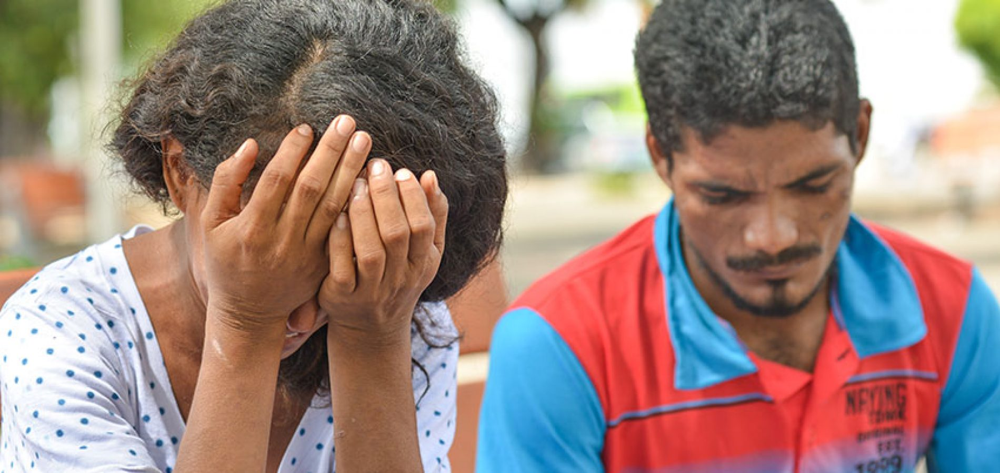

Em uma noite, o filho de um casal desaparece e o marido conta a esposa que o motivo do desaparecimento do filho foi porque ele foi escolhido como o novo “Thunder Boy”.
Na noite do aniversário do garoto, depois do fim da festa, o marido estava levando o garoto ao quarto dele para descansar. A esposa viu um relâmpago cair fora de casa e logo depois vê o marido descendo as escadas com uma expressão de surpresa, ela fala sobre o relâmpago para o marido, ele a encara com uma cara séria e depois fala que tem que contar algo a ela. Ele contou a ela que filho recebeu uma espada e que a espada era um sinal de que ele foi escolhido para ser o novo “Thunder Boy”, logo depois ele diz que o garoto gritou ‘Ramil’ e um trovão cai em cima do filho, o menino e a espada ficam azuis e logo depois desaparecem.
A mulher tem certeza que o marido enlouqueceu e então chamou uma equipe de busca, mas ainda não encontraram o menino. O marido continua a falar que o filho virou um super-herói e que os últimos feitos estranhos que aconteceram ultimamente foram realizados pelo filho.
Essa edição da Revistoteca irá tratar sobre o livro “Comédias para se ler na escola”, trazendo várias informações sobre esse incrível livro composto por diversas crônicas interessantes. Revistoteca avisa que o conteúdo presente na revista não é 100% verídico. Esperamos que gostem dessa edição.